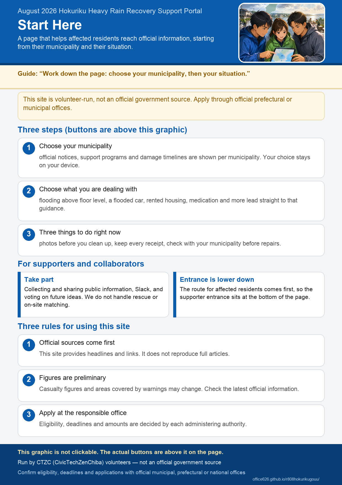

August 2026 Hokuriku Heavy Rain Recovery Support Portal
This website is run by CTZC volunteers and is not an official government publication. Apply and make inquiries through the official Ishikawa, Toyama and Fukui or municipal contact points. Always check official websites for the latest information.
Choose the municipality you live in
Each municipality has its own page with official notices, support programs, and how the damage has developed.
Choose what you are dealing with
For each situation, the site lists what to do first, what causes trouble later, and support that is easy to miss.
Three things to do right now
- Take photos before you clean up All four sides, the water line, each room, and everything you throw away. You cannot take them again later.
- Keep every receipt Repairs, cleaning, lodging, and replacement purchases. You will need them for support programs and insurance.
- Check with your municipality before repairs Signing a repair contract first can make you ineligible for publicly funded emergency repairs.
For Ishikawa, Toyama and Fukui residents (all guidance)
Housing, travel and daily life, businesses, prefectural and national support, update history
For supporters and partners
Share information and take part through Slack, voting, and action items
